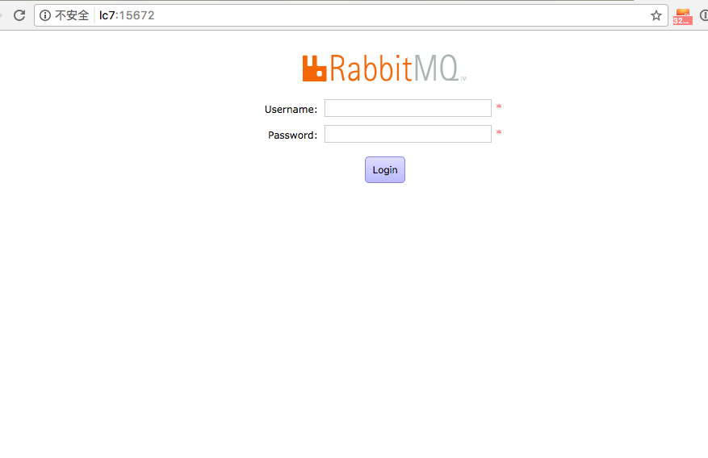
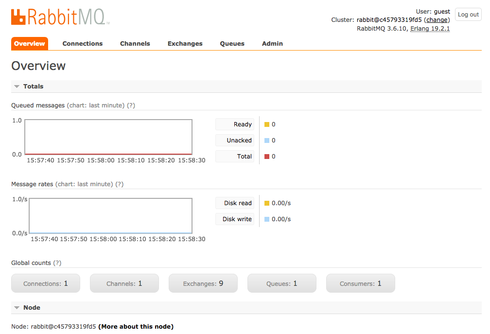

为了更加熟悉我们现在所使用的微服务架构，了解每一个组件的特性，我将部署在 lc0 上的一系列微服务组件（网关、注册中心、配置中心、熔断监控等）尝试重新在 lc7 机器上再部署一遍。
在部署配置中心时，需要依赖一个 MQ 组件，项目中用的是 RabbitMQ，所以我需要在 lc7 上安装它。
RabbitMQ 是用 Erlang 编写的，直接部署的话需要先部署 Erlang 环境，比较麻烦。在 docker 环境下部署就比较简单了，直接使用 RabbitMQ 官方提供的镜像即可。
直接安装的方式可以参考 http://blog.didispace.com/spring-boot-rabbitmq/ 这篇文章，下边我主要来说下如何使用 Docker 部署 RabbitMQ。
运行 docker pull rabbitmq:management 从官方下载镜像到本地，这里使用的是带 Web 管理插件的镜像。
启动容器：
1 | docker run -d --name rabbitmq --publish 5671:5671 \ |
容器启动之后就可以访问 Web 管理界面了 http://IP:15672

默认创建了一个 guest 用户，密码也是 guest。

通过这种方式来部署 RabbitMQ 非常方便，今后可以在部署 测试环境 时用起来，因为我们还没有大规模使用 Docker，所以暂时不建议在 生产环境 来使用。
AMQP 协议中的几个重要概念
- Queue 是 RabbitMQ 的内部对象，用于存储消息。RabbitMQ 中的消息只能存储在 Queue 中，消费者从 Queue 中获取消息并消费。
- Exchange 生产者将消息发送到 Exchange，由 Exchange 根据一定的规则将消息路由到一个或多个 Queue 中（或者丢弃）。
- Binding RabbitMQ 中通过 Binding 将 Exchange 与 Queue 关联起来。
- Binding key 在绑定（Binding） Exchange 与 Queue 的同时，一般会指定一个 binding key。
- Routing key 生产者在将消息发送给 Exchange 的时候，一般会指定一个 routing key，来指定这个消息的路由规则。 Exchange 会根据 routing key 和 Exchange Type 以及 Binding key 的匹配情况来决定把消息路由到哪个 Queue。
- Exchange Types RabbitMQ 常用的 Exchange Type 有 fanout、 direct、 topic、 headers 这四种。
- fanout 这种类型的 Exchange 路由规则非常简单，它会把所有发送到该 Exchange 的消息路由到所有与它绑定的 Queue 中，这时 Routing key 不起作用。
- direct 这种类型的 Exchange 路由规则也很简单，它会把消息路由到那些 binding key 与 routing key完全匹配的 Queue 中。
- topic 这种类型的 Exchange 的路由规则支持 binding key 和 routing key 的模糊匹配，会把消息路由到满足条件的 Queue。 binding key 中可以存在两种特殊字符 与 #，用于做模糊匹配，其中 用于匹配一个单词，# 用于匹配多个单词（可以是零个），单词以 . 为分隔符。
- headers 这种类型的 Exchange 不依赖于 routing key 与 binding key 的匹配规则来路由消息，而是根据发送的消息内容中的 headers 属性进行匹配。